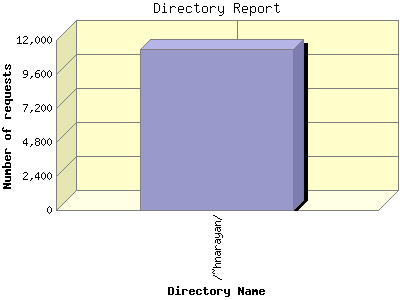

Report generated by Analog 6.0 and Report Magic 2.21
|
Web Server Statistics for "Harish Narayanan (hnarayan) - April 2005" Report generated by Analog 6.0 and Report Magic 2.21 |
The Directory Report analyzes accesses to this web site's directories. This information can be useful in determining the most requested areas.
This report shows all results. This report is sorted by number of requests.

| Directory Name | Number of requests | Percentage of the bytes | |
|---|---|---|---|
| 1. | /~hnarayan/ | 11,395 | 100.00% |
| /~hnarayan/downloads/ | 1,349 | 63.94% | |
| /~hnarayan/downloads/images/ | 876 | 42.98% | |
| /~hnarayan/downloads/talks/ | 155 | 8.01% | |
| /~hnarayan/downloads/talks/talk2/ | 41 | 3.49% | |
| /~hnarayan/downloads/talks/talk5/ | 23 | 1.27% | |
| /~hnarayan/downloads/talks/talk1/ | 31 | 1.24% | |
| /~hnarayan/downloads/talks/talk3/ | 27 | 1.22% | |
| /~hnarayan/downloads/talks/talk4/ | 22 | 0.78% | |
| /~hnarayan/downloads/posters/ | 52 | 5.23% | |
| /~hnarayan/downloads/posters/poster1/ | 40 | 5.23% | |
| /~hnarayan/downloads/papers/ | 213 | 4.00% | |
| /~hnarayan/downloads/videos/ | 32 | 3.73% | |
| /~hnarayan/site/ | 1,154 | 16.80% | |
| /~hnarayan/site/images/ | 381 | 9.56% | |
| /~hnarayan/site/images/smileys/ | 30 | 0.02% | |
| /~hnarayan/site/images/icons/ | 46 | 0.01% | |
| /~hnarayan/site/logs/ | 67 | 1.84% | |
| /~hnarayan/site/broken/ | 4 | 0.01% | |
| /~hnarayan/site/contact.html/ | 13 | 0.01% | |
| /~hnarayan/images/ | 4,900 | 9.39% | |
| /~hnarayan/images/photos/ | 3,054 | 3.40% | |
| /~hnarayan/images/photos/thumbs/ | 3,041 | 3.39% | |
| /~hnarayan/images/slides_alone/ | 315 | 0.38% | |
| /~hnarayan/images/slides_alone/7_files/ | 26 | 0.07% | |
| /~hnarayan/images/slides_alone/1_files/ | 30 | 0.06% | |
| /~hnarayan/images/slides_alone/3_files/ | 25 | 0.06% | |
| /~hnarayan/images/slides_alone/2_files/ | 25 | 0.06% | |
| /~hnarayan/images/slides_alone/4_files/ | 26 | 0.04% | |
| /~hnarayan/images/slides_alone/5_files/ | 24 | 0.03% | |
| /~hnarayan/images/slides_alone/6_files/ | 25 | 0.01% | |
| /~hnarayan/images/tex/ | 53 | 0.04% | |
| /~hnarayan/cgi-data/ | 49 | 0.05% | |
This report was generated on May 10, 2005 18:43.
Report time frame April 1, 2005 00:36 to April 30, 2005 23:55.
| Web statistics report produced by: | |
 Analog 6.0 Analog 6.0 |  Report Magic 2.21 Report Magic 2.21 |